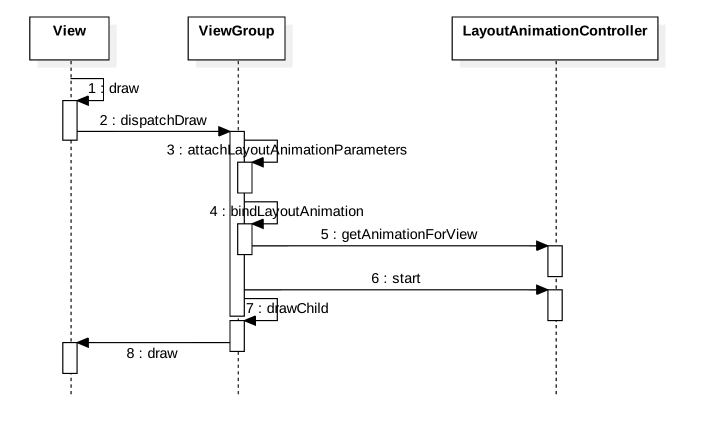

你或许注意到android.view.animation包下有个类很特别的类叫LayoutAnimationController。
LayoutAnimationController介绍
跟AlphaAnimation等类不同，LayoutAnimationController并不是Animation的子类。先看看官方文档。
A layout animation controller is used to animated a layout’s, or a view group’s, children. Each child uses the same animation but for every one of them, the animation starts at a different time. A layout animation controller is used by ViewGroup to compute the delay by which each child’s animation start must be offset. The delay is computed by using characteristics of each child, like its index in the view group. This standard implementation computes the delay by multiplying a fixed amount of miliseconds by the index of the child in its parent view group. Subclasses are supposed to override getDelayForView(android.view.View) to implement a different way of computing the delay. For instance, a GridLayoutAnimationController will compute the delay based on the column and row indices of the child in its parent view group. Information used to compute the animation delay of each child are stored in an instance of LayoutAnimationController.AnimationParameters, itself stored in the ViewGroup.LayoutParams of the view
简单来说就是，ViewGroup使用LayoutAnimationController来计算子View动画的延迟时间。通常使用子View的某个特征来计算延迟时间，比如子View的索引。标准实现中是使用子View的索引乘上一个固定的时间。LayoutAnimationController的子类也可以重写getDelayForView()方法，以使用其它计算方式。比如GridLayoutAnimationController就是基于行索引和列索引来计算子View的动画的延迟时间。
用于计算每个子View动画延迟时间的信息保存在LayoutAnimationController.AnimationParameters参数中，而该参数本身又保存在ViewGroup.LayoutParams中。
LayoutAnimationController用法
它的用法还是比较简单，所以直接上例子。
rv_item_list_anim.xml用于指定item的动画。
1 |
|
rv_layout_animation.xml用于定义LayoutAnimationController。
1 |
|
效果如下：
LayoutAnimationController源码分析
ViewGroup使用LayoutAnimationController成员来实现动画效果。相关的方法包括：
setLayoutAnimation()和getLayoutAnimation()- 分别用于设置和获取动画canAnimate()- 判断是否有动画效果startLayoutAnimation()- 启动动画
1 | public abstract class ViewGroup extends View implements ViewParent, ViewManager { |
LayoutAnimationController的时序图如下：

对几个关键步骤稍加说明：
- 第5步 - 调用
LayoutAnimationController.getAnimationForView()为child view创建animation - 第6步 - 调用
LayoutAnimationController.start()启动动画 - 第8步 - 注意这一步调用的是
boolean View.draw(Canvas canvas, ViewGroup parent, long drawingTime)方法。所以其实最终又回到了前一篇所讲的View Animation